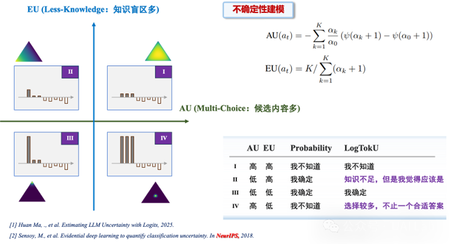
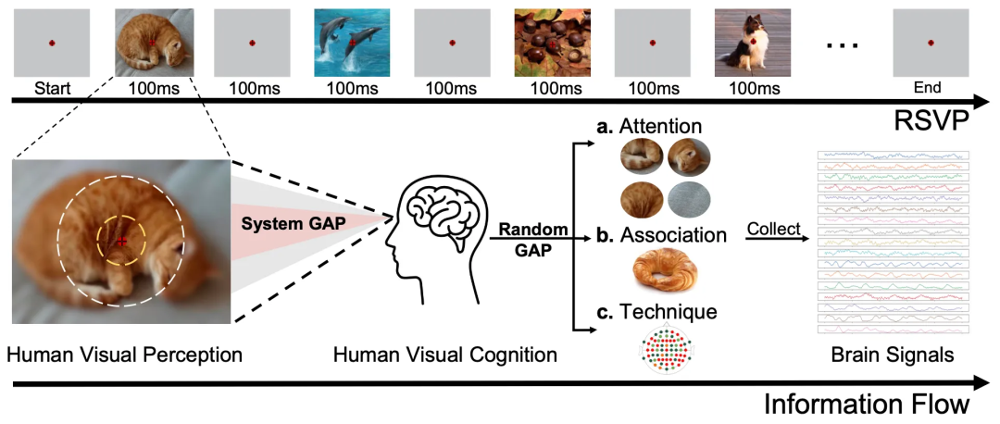

大语言模型（LLMs）常面临“幻觉”问题，输出不可靠信息。不确定性估计作为评估模型输出可靠性的关键指标，对于提升LLM可信度、支撑下游任务至关重要。然而，传统基于概率的不确定性估计方法难以有效捕捉生成响应的不确定性，在LLM场景中表现不佳。本文揭示了其失效的核心原因：概率方法在归一化过程中丢失了证据强度信息。基于此，提出LogTokU（Logits-induced Token Uncertainty）框架，通过利用LLM生成下一token的证据强度将不确定性建模为偶然不确定性（AU）和认知不确定性（EU），实时估计大模型不确定性。在动态解码和QA可靠性估计中显著优于传统方法，提升了LLM的可靠性，拓展了大模型不确定性应用范围，同时为多领域下游任务探索提供了新思路，已经受到麻省理工学院（MIT）、密歇根州立大学（MSU）等机构研究人员的关注。

尽管人类具备强大的感知与认知能力，但受限于注意力资源、视觉记忆容量等因素，当外部视觉刺激转化为脑信号时，部分信息不可避免地丢失，特别是那些高频细节。我们将这种由系统性加工处理造成的信息差距，称为 System GAP。与此同时，认知和感知的动态性，以及技术采集噪声等因素，进一步加剧了信号与原始视觉刺激之间的差距，我们称之为 Random GAP。这些因素共同导致了脑信号和视觉刺激的信息量不一致和模态差异，从而增加了图像与脑信号对齐的难度，影响模型泛化性能。在本研究中，我们提出了 不确定性感知模糊先验（UBP） 方法，旨在减缓视觉神经解码中 System GAP 和 Random GAP 导致的信息损失。实验结果表明，UBP在多个数据集上显著优于现有最先进方法。在 THING-EEG 数据集上，UBP实现了 Top-1 准确率提升 13.7% 和 Top-5 准确率提升 9.8%。本方法通过将不确定性感知和生物学先验引入视觉神经解码，为脑-机接口领域提供了新的研究视角。同时，UBP还为其他多模态任务提供了重要启示，尤其是在面对模态差距和信息不平衡的任务时。